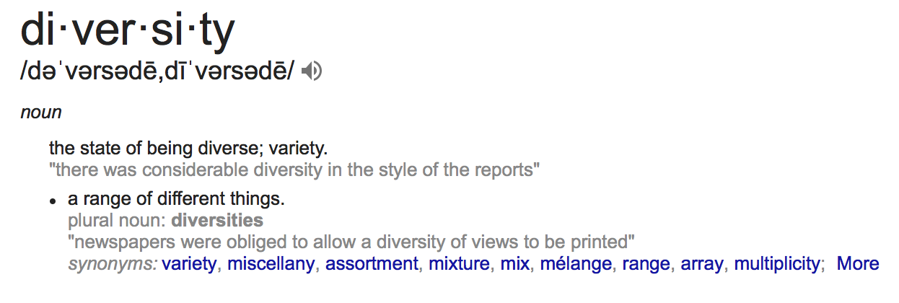

A website that disabled or handicapped individuals can utilize in order to find out what restaurants, stores, apartments, cars and other properties are wheelchair accessible. Often handicapped people have trouble getting into places because of even ONE step. Areas that do not have ramps or ways in which disabled peoples can get inside prove to be a daily challenge. In some areas, individuals cannot even take public transportation.
